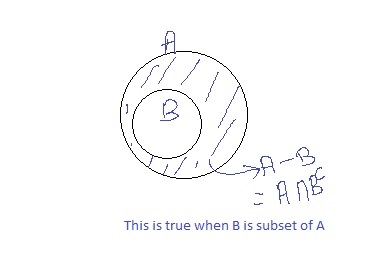
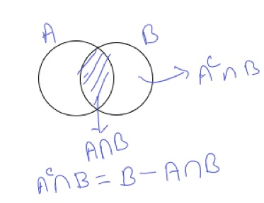

Basics
The Union and intersection
The union \(E\cup F\;\) of events \(E\) and \(F\) always means \(E\) OR \(F\) , The intersection \(E\cap F\) of events \(E\) and \(F\) always means \(E\) AND \(F\)
The union \(\bigcup_i E_{i\;}\) of events \(E_{i\;\;}\) always means at least one of the \(E_i\)’s, The intersection \(\bigcap_i E_i\) of events \(E_{i\;}\) always means each of the \(E_i\)’s
Complementary Events
The complement of an event is \(E^c =\bar{E} =E^* :=\Omega -E\)
Simple Properties of events
- commutativity:
\(\begin{array}{l} E\cup F=F\cup E\\ E\cap F=F\cap E \end{array}\) - Associativity:
\(\begin{array}{l} E\cup \left(F\cup G\right)=\left(E\cup F\right)\cup G=E\cup F\cup G\\ E\cap \left(F\cap G\right)=\left(E\cap F\right)\cap G=E\cap F\cap G \end{array}\) - Distributivity:
\(\begin{array}{l} \left(E\cup F\right)\cap G=\left(E\cap G\right)\cup \left(F\cap G\right)\\ \left(E\cap F\right)\cup G=\left(E\cup G\right)\cap \left(F\cup G\right)\; \end{array}\) - De Morgan’s Law:
\(\begin{array}{l} {\left(E\cup F\right)}^c =E^{c\;} \cap F^{c\;} \\ {\left(E\cap F\right)}^{c\;} =E^c \cup F^c \end{array}\) Similarly \(\begin{array}{l} {\left({\bigcup_{\;\;} }_i E_{i\;} \right)}^c ={\bigcap_{\;} }_i E_{i\;}^{c\;} \\ {\left({\bigcap_{\;} }_i E_{i\;} \right)}^{c\;} ={\bigcup_{\;} }_i E_i^{c\;} \end{array}\)
Definition (axioms of probability)
The probability \(P\) on a sample space \(\Omega\) assigns numbers to events \(\Omega\) of in such a way that 1. The probability of any event is non-negative : \(P\left\lbrace E\right\rbrace \ge 0\) 2. The probability if the sample space is one : \(P\left\lbrace \Omega \;\right\rbrace =1\) 3. For any finitely or countably infinitely many manually exclusive events \(E_{1,} E_2 ,\ldotp \ldotp \ldotp\) , \(P\left\lbrace {\bigcup_{i\;} E_{i\;} }_{\;} \right\rbrace =\sum_i P\left\lbrace E_i \right\rbrace \;\)
A few simple facts
Inclusion-exclusion principle:
- For any events \(E\) and \(F\), \(P\left\lbrace E\cup F\right\rbrace =P\left\lbrace E\right\rbrace +P\left\lbrace F\right\rbrace -P\left\lbrace E\cap F\right\rbrace\)
- For any events \(E\), \(F\) and \(G\):
\(P\left\lbrace E\cup F\cup G\right\rbrace =P\left\lbrace E\right\rbrace +P\left\lbrace F\right\rbrace +P\left\lbrace G\right\rbrace -P\left\lbrace E\cap F\right\rbrace -P\left\lbrace E\cap G\right\rbrace -P\left\lbrace F\cap G\right\rbrace +P\left\lbrace E\cap F\cap G\right\rbrace\)
- Generally:
\(p\left\lbrace E_1 \cup E_2 \cup E_3 \cup \ldotp \ldotp \ldotp \cup E_n \right\rbrace =\sum_{1\le i\le n} P\left\lbrace E_i \right\rbrace -\sum_{1\le i_1 \le i_2 \le n} P\left\lbrace E_{i_1 } \cap E_{i_2 } \right\rbrace +\sum_{1\le i_1 \le i_2 \le i_{3\;} \le n} \left\lbrace P\left\lbrace E_{i_1 } \cap E_{i_2 } \cap E_{i_3 } \right\rbrace \right\rbrace -\ldotp \ldotp \ldotp \;+{\left(-1\right)}^{n+1} P\left\lbrace E_1 \cap E_2 \cap E_3 \right\rbrace\)
Boole’s inequality
- For any events \(E_1 ,E_2 ,\ldotp \ldotp \ldotp E_n\)
\(P\left\lbrace \bigcup_{i=1}^n E_i \right\rbrace \le \sum_{i=1}^n P\left\lbrace E_i \right\rbrace\)
Example
Out of \(n\) people, what is the probability that there are no coinciding birthdays? \(|\Omega |={365}^n\)
\(|E|=365\ldotp 364\ldotp \ldotp \ldotp \left(365-n+1\right)=\frac{365!}{\left(365-n\right)!}\)
\(P\left\lbrace E\right\rbrace =\frac{|E|}{|\Omega |}=\frac{365!}{\left(365-n\right)!{365}^n }\)
Conditional Probability
Let \(F\) be an Event with \(P\left\lbrace F\right\rbrace >0\) . then the conditional probability \(E\) of given \(F\) is defined as: \(P\left\lbrace E|F\right\rbrace :=\frac{P\left\lbrace E\cap F\right\rbrace }{P\left\lbrace F\right\rbrace }\)
Conditional Probability can be interpreted as:
“In what proportion of case in \(F\) will also \(E\) occur?” or “How does the probability of both \(E\) and \(F\) compare to the probability of \(F\) only?”
conditional probability is a proper probability and it satisfies the axioms:
- The conditional probability of any event is non-negative :\(P\left\lbrace E|F\right\rbrace \ge 0\)
- The conditional probability if the sample space is one :\(P\left\lbrace \Omega |F\;\right\rbrace =1\)
- For any finitely or countably infinitely many manually exclusive events \(E_{1,} E_2 ,\ldotp \ldotp \ldotp\) , \(P\left\lbrace {\bigcup_{i\;} E_{i\;} |F}_{\;} \right\rbrace =\sum_i P\left\lbrace E_i |F\right\rbrace \;\)
Corollary
- \(P\left\lbrace E^c |F\right\rbrace =1-P\left\lbrace E|F\right\rbrace\)
- \(P\left\lbrace \phi |F\right\rbrace =0\)
- \(P\left\lbrace E|F\right\rbrace =1-P\left\lbrace E^c |F\right\rbrace \le 1\)
- \(P\left\lbrace \left(E\cup G\right)|F\right\rbrace =P\left\lbrace E|F\right\rbrace +P\left\lbrace G|F\right\rbrace -P\left\lbrace E\cap F|F\right\rbrace\)
proof:
\(\begin{array}{l} P\left\lbrace \left(E\cup G\right)|F\right\rbrace =\frac{P\left\lbrace \left(E\cup G\right)\cap F\right\rbrace }{P\left\lbrace F\right\rbrace }=\frac{P\left\lbrace \left(E\cap F\right)\cup \left(G\cap F\right)\right\rbrace }{P\left\lbrace F\right\rbrace }\\ =\frac{P\left(E\cap F\right)+P\left(G\cap F\right)-P\left\lbrace \left(E\cap F\right)\cap \;\left(G\cap F\right)\right\rbrace }{P\left\lbrace F\right\rbrace }=\frac{P\left(E\cap F\right)+P\left(G\cap F\right)-P\left\lbrace E\cap G\cap F\right\rbrace }{P\left\lbrace F\right\rbrace }\\ =P\left\lbrace E|F\right\rbrace +P\left\lbrace G|F\right\rbrace -P\left\lbrace E\cap F|F\right\rbrace \end{array}\) - if \(E\subseteq G\) then \(P\left\lbrace \left(G-E\right)|F\right\rbrace =P\left\lbrace G|F\right\rbrace -P\left\lbrace E|F\right\rbrace\)
proof:
\(\begin{array}{l} P\left\lbrace G|F\right\rbrace -P\left\lbrace E|F\right\rbrace =\frac{\;P\left\lbrace G\cap F\right\rbrace }{P\left\lbrace \mathrm{F}\right\rbrace }-\frac{\;P\left\lbrace E\cap F\right\rbrace }{P\left\lbrace \mathrm{F}\right\rbrace }\\ =\frac{P\left\lbrace \left(G\cap F\right)-\left(E\cap F\right)\right\rbrace \;}{P\left\lbrace \mathrm{F}\right\rbrace }=\frac{P\left\lbrace \left(G\cap F\right)\cap {\left(E\cap F\right)}^c \right\rbrace \;}{P\left\lbrace \mathrm{F}\right\rbrace }\\ =\frac{P\left\lbrace \left(G\cap F\right)\cap {\left(E^{c\;} \cup F^{c\;} \right)}^{\;} \right\rbrace \;}{P\left\lbrace \mathrm{F}\right\rbrace }=\frac{P\left\lbrace G\cap \left(F\cap {\left(E^{c\;} \cup F^{c\;} \right)}^{\;} \right)\right\rbrace \;}{P\left\lbrace \mathrm{F}\right\rbrace }\\ =\frac{P\left\lbrace G\cap \left({\left({F\cap \;E}^{c\;} \right)\cup \left({F\cap \;F}^{c\;} \right)}^{\;} \right)\right\rbrace \;}{P\left\lbrace \mathrm{F}\right\rbrace }=\frac{P\left\lbrace G\cap {F\cap \;E}^{c\;} \right\rbrace \;}{P\left\lbrace \mathrm{F}\right\rbrace }\\ =\frac{P\left\lbrace G\cap {\;E}^{c\;} \cap F\right\rbrace \;}{P\left\lbrace \mathrm{F}\right\rbrace }=\frac{P\left\lbrace \left(G-{\;E}^{\;} \right)\cap F\right\rbrace \;}{P\left\lbrace \mathrm{F}\right\rbrace }=P\left\lbrace \left(G-E\right)|F\right\rbrace \end{array}\)
if \(A\subseteq B\) then \(P\left(B\right)-P\left(A\right)=P\left(B_{\;} -A\right)\) Here as \(E\subseteq G\) so \(\left(E\cap F\right)\subseteq \left(G\cap F\right)\) so we can write \(P\left\lbrace G\cap F\right\rbrace -\;P\left\lbrace E\cap F\right\rbrace=P\left\lbrace \left(G\cap F\right)-\left(E\cap F\right)\right\rbrace\)

- if \(E\subseteq G\) then \(P\left\lbrace E|F\right\rbrace \le P\left\lbrace G|F\right\rbrace\)
Multiplication Rule
For \(E_1 ,E_2 ,\ldotp \ldotp \ldotp E_n\) events:
\(P\left\lbrace E_1 \cap E_2 \cap \ldotp \ldotp \ldotp \cap E_n \right\rbrace =P\left\lbrace E_1 \right\rbrace \ldotp P\left\lbrace E_2 |E_1 \right\rbrace \ldotp P\left\lbrace E_3 |E_1 \cap E_2 \right\rbrace \ldotp \ldotp \ldotp \ldotp P\left\lbrace E_n |E_1 \cap E_2 \cap \ldotp \ldotp \ldotp \cap E_{n-1} \right\rbrace\)
The law of total probability
This is also known as partition theorem
For any events \(E\) and \(F\)
\(P\left\lbrace E\right\rbrace =P\left\lbrace E|F\right\rbrace \ldotp P\left\lbrace E\right\rbrace +P\left\lbrace E|F^c \right\rbrace \ldotp P\left\lbrace F^c \right\rbrace\)
\(P\left\lbrace E\right\rbrace =\sum_i P\left\lbrace E|F_i \right\rbrace \ldotp P\left\lbrace F_i \right\rbrace\)
Bayes’ Theorem
For any events \(E\) and \(F\)
\(P\left\lbrace F|E\right\rbrace =\frac{P\left\lbrace E|F\right\rbrace \ldotp P\left\lbrace F\right\rbrace }{P\left\lbrace E|F\right\rbrace \ldotp P\left\lbrace F\right\rbrace +P\left\lbrace E|F^c \right\rbrace \ldotp P\left\lbrace F^c \right\rbrace }\)
if \({\left\lbrace F_i \right\rbrace }_i\) is a complete system of events, then
\[P\left\lbrace F_i |E\right\rbrace =\frac{\;P\left\lbrace E|F_i \right\rbrace \ldotp P\left\lbrace F_i \right\rbrace }{\sum_j \;P\left\lbrace E|F_j \right\rbrace \ldotp P\left\lbrace F_j \right\rbrace }\]
Independence
Event \(E\) and \(F\) are independent if \(P\left\lbrace E|F\right\rbrace =P\left\lbrace E\right\rbrace\) or \(P\left\lbrace E\cap F\right\rbrace =P\left\lbrace E\right\rbrace \cdot P\left\lbrace F\right\rbrace\)
Mutually exclusive events are necessarily also dependent events because one’s existence depends on the other’s non-existence.Dependent events are not necessarily mutually exclusive
- If \(A\) and \(B\) are independent then \(A^c\) and \(B\) are also also independent
Proof:
\(P\left(A^c |B\right)=\frac{P\left(A^c \cap B\right)}{P\left(B\right)}=\frac{P\left(B\right)-P\left(A^{\;} \cap \;\;B\right)}{P\left(B\right)}=1-P\left(A|B\right)=1-P\left(A\right)=P\left(A^c \right)\)

Three events \(E\), \(F\) and \(G\) are (mutually) independent if - \(P\left\lbrace E\cap F\right\rbrace =P\left\lbrace E\right\rbrace \ldotp P\left\lbrace F\right\rbrace\) - \(P\left\lbrace E\cap G\right\rbrace =P\left\lbrace E\right\rbrace \ldotp P\left\lbrace G\right\rbrace\) - \(P\left\lbrace F\cap G\right\rbrace =P\left\lbrace F\right\rbrace \ldotp P\left\lbrace G\right\rbrace\) - \(P\left\lbrace E\cap F\cap G\right\rbrace =P\left\lbrace E\right\rbrace \ldotp P\left\lbrace F\right\rbrace \ldotp P\left\lbrace G\right\rbrace\)